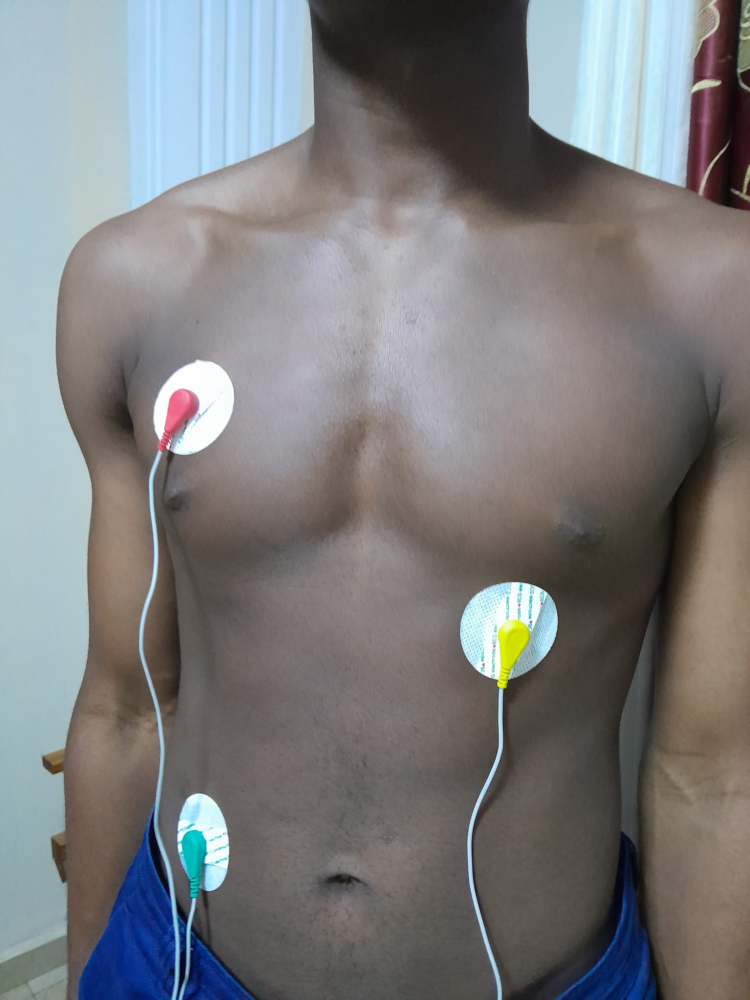
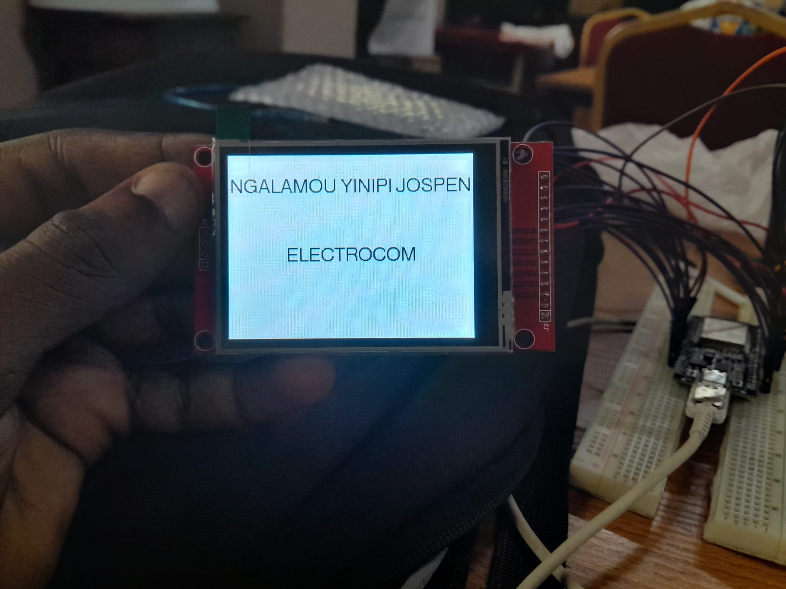
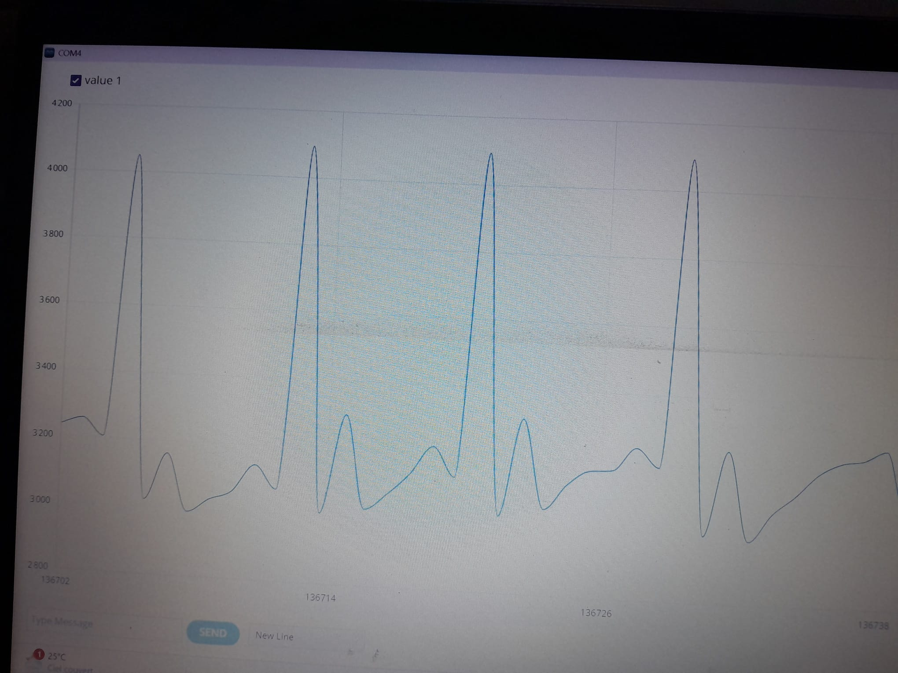

Conception complète — chaîne d'amplification, filtrage actif et prototypage embarqué — d'un dispositif portable d'acquisition de signaux électrocardiographiques.
Le parcours du signal, de la peau à l'écran : chaque étage retire une source de bruit avant la numérisation.
Ce projet visait à concevoir un moniteur cardiaque portable capable d'extraire un signal bioélectrique de l'ordre du millivolt dans un environnement bruité, tout en garantissant une immunité électromagnétique et un affichage clair des battements en temps réel.



Écran TFT autonome affichant la barre de progression puis la grille ECG.
Défilement continu du tracé électrocardiographique filtré.
KERNEL PANIC — Hard Fault Exception
------------------------------------------
R0 = 0x00000000 R1 = 0x2000A3F0
R2 = 0x00000001 R3 = 0x08003A10
R12 = 0xDEADBEEF LR = 0x08002F1C
PC = 0x08003A4C xPSR= 0x21000000
CFSR = 0x00008200 HFSR = 0x40000000
>>> Stack overflow detected in task 'main_loop'
>>> System halted.